Capyverse Logo Lab
Logo directions for Capyverse Odyssey for Capyverse Odyssey, drawn as vector art (no AI): real font outlines re-set letter by letter, plus hand-drawn shapes for the capybara, popcorn, verified badge and planet. Every one is a clean SVG with no font dependency, tested on the #12 capsule and at Steam's smallest sizes.
What the Steam hits do
21 library logos from comparable games: Fall Guys, Stumble Guys, Party Animals, Goat Simulator, TABS, Human Fall Flat, Untitled Goose Game, Content Warning, Crab Champions, Risk of Rain 2, Hades, Brotato, Balatro, Roboquest, Gunfire Reborn and more.

- One idea, not a sceneThe hits are type plus one twist: Brotato's bandana O, Balatro's playing card, Omori's light bulb, TABS' weapons. The current Capyverse logo is a whole illustrated sign (planks, gear, vines, compass).
- Flat beats renderedThe quirky-3D games (Fall Guys, Stumble Guys, Party Animals) use chunky rounded type with a thick outline and one shadow. Painted wood and metal texture turns to mush at 231 px.
- Short name, hugeCrab Champions, TABS and Brotato make the first word the logo and shrink the rest. "CAPYVERSE" should carry it; "ODYSSEY" is a tag.
- Personality in one letterMost swap a single glyph for a story object. Capyverse has three natural candidates: Cappy, popcorn, the viral video.
- An icon that stands aloneUntitled Goose Game and Content Warning ship a mark that works without words: favicon, Discord, small capsule.

Popcorn Pop
Party-game sticker logo- Titan One letters, each re-set by hand on a bouncing baseline with its own tilt, so the word looks like it's mid-jetpack.
- The first C is Cappy's head: ear, eye, brow and nostril drawn onto the letter.
- The O of ODYSSEY is a popcorn kernel, sitting on a red-and-white popcorn-bucket band.
- Jetpack speed streaks behind the word; a cream sticker outline holds it together on any background.

- Feels like
- Fall Guys, Stumble Guys. Warm, toy-like, instantly "family-friendly party game".
- Strength
- Most Cappy-forward of the three; the popcorn band ties straight to his weapon.
- Weakness
- The most detail, so it gets busy at 231 px. Party-game sticker logos are a crowded look on Steam.
Going Viral
The story in one mark- Rubik Black, sheared forward like a fast-scrolling feed, white with an ink outline and one hard hot-pink shadow.
- CAPYVERSE has a blue verified badge: the capybaras are the famous ones now, which is the whole plot.
- ODYSSEY is a red notification pill, and its O is a play button: the viral video.
- A heart reaction pops off the C, and the A's counter is tinted the same red.

- Feels like
- Crab Champions' confidence plus internet culture: fast, loud, a little cheeky.
- Strength
- Tells the store pitch ("capybaras went viral, Ophelia took it personally") without a sentence. Flat colors, so it reads best at every size and on both backgrounds.
- Weakness
- No capybara in the mark itself; it leans on the art to show Cappy. Pair it with C's emblem as the icon.
Rounds 3–4: one object, designed overlaps
Feedback applied: C removed; D, E and F rebuilt so both rows read as one object; the Y/V overlap in Toybox fixed; three new directions (G, H, I). A collision checker measures every pair of neighbouring letters from their real outlines and widens the spacing until none touch. It found four collisions in the old Toybox: Y/V, A/P, E/R, S/E.
Toybox
Luckiest Guy, rows fused- Round 4: letters now overlap on purpose, Stumble Guys style. Every pair is tuned to the same small overlap (1–3.5% of the smaller letter), and each letter carries its own outline, so where two overlap the front letter's outline cuts cleanly over the back one. No more gap between Y and V. ODYSSEY tucks 12 px into CAPYVERSE.
- Rows fused into one shape, with one shared outline and 3D block under both words. Letters are auto-kerned until no two touch, and the gaps between them are closed by a solid silhouette so the background never shows through.
- Y/V, A/P, E/R and S/E collisions fixed by kerning (the old Y overlapped the V by 585 px²).
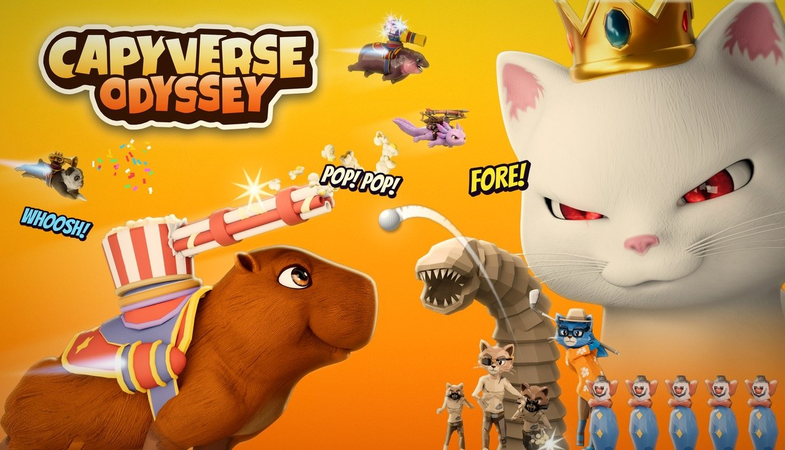
- Feels like
- Party Animals, a toy box label.
- Strength
- Warm and friendly; now a single sticker shape.
- Weakness
- ODYSSEY's orange sits close to the brand orange; the cream sticker carries the contrast.
Stumble
CAPYVERSE now the big word- Round 4: letters now overlap on purpose, Stumble Guys style. Every pair is tuned to the same small overlap (1–3.5% of the smaller letter), and each letter carries its own outline, so where two overlap the front letter's outline cuts cleanly over the back one. No more gap between Y and V. ODYSSEY overlaps the bottom of CAPYVERSE and sits on top of it.
- CAPYVERSE is the big gold word on top; ODYSSEY is smaller and white, tucked tight underneath.
- One navy 3D block under both rows, tilted up like the Stumble Guys logo.
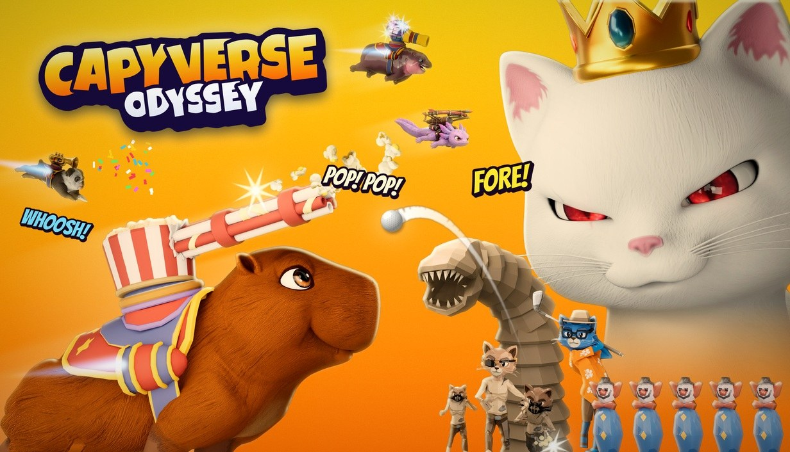
- Feels like
- Stumble Guys, Fall Guys.
- Strength
- Pops on every background; the name is the hero.
- Weakness
- Close to the Stumble Guys formula.
Marquee
Arch and tag fused- CAPYVERSE arched like a carnival sign; the ODYSSEY tag tucks up into the arch and shares its outline, so it reads as one sign.
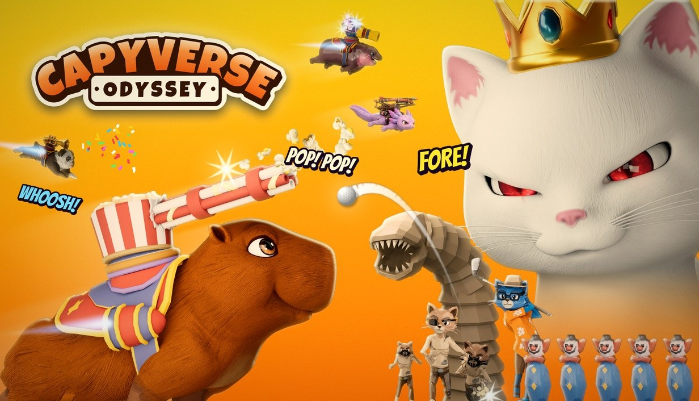
- Feels like
- A funfair marquee.
- Strength
- Strong silhouette; ODYSSEY stays readable small.
- Weakness
- Orange on orange; needs the cream sticker.
Popcorn Band
New- CAPYVERSE in butter-yellow sits on a red-and-white popcorn-bucket band; the letters overlap the band edge so word and band are one object.
- White ODYSSEY with a brown outline on the stripes: Cappy's popcorn gatling in logo form.
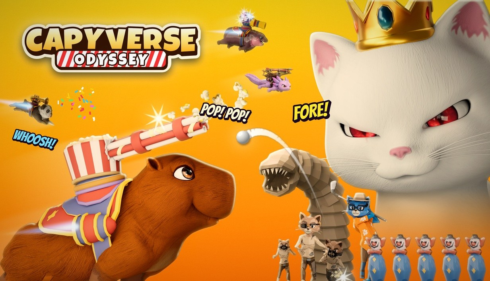
- Feels like
- A cinema snack counter, very on-brand for Cappy.
- Strength
- The most Cappy-specific idea that stays simple.
- Weakness
- The stripes get busy at the smallest size.
Viral Stumble
New: B + E combined- Round 4: letters now overlap on purpose, Stumble Guys style. Every pair is tuned to the same small overlap (1–3.5% of the smaller letter), and each letter carries its own outline, so where two overlap the front letter's outline cuts cleanly over the back one. No more gap between Y and V. Jetpack thruster streaks added behind the C, same as the Jetpack option.
- E's chunky Luckiest Guy build and navy block, with B's story pieces: verified badge, red notification pill, play-button O.
- White letters with a hot-pink offset shadow; slightly sheared forward.
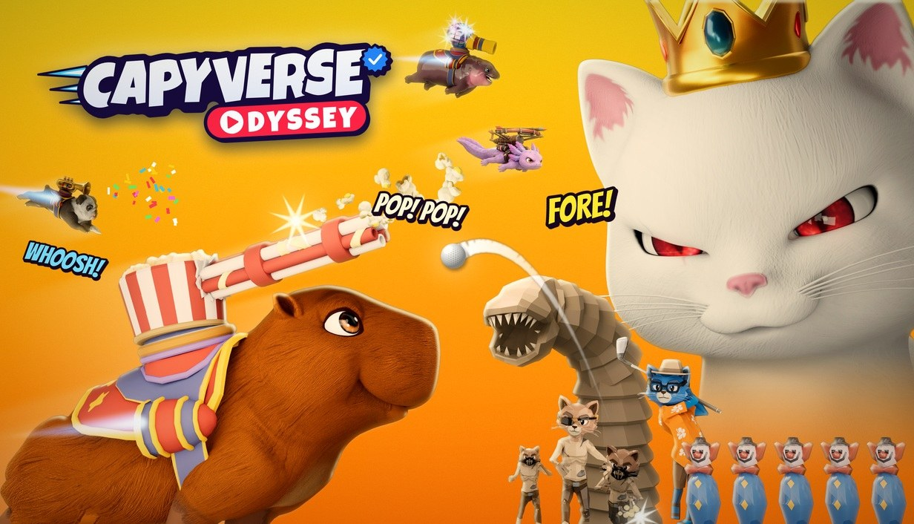
- Feels like
- Stumble Guys energy with an internet-culture twist.
- Strength
- Tells the 'capybaras went viral' story and keeps the party-game look you liked.
- Weakness
- The badge and pill add two small parts to keep crisp in the final art.
Jetpack
New- CAPYVERSE climbs a ramp letter by letter and leans forward, like it's taking off on a jetpack; ODYSSEY trails underneath.
- Two cyan thruster streaks behind the C; gold over white on a navy block, fused with a cream sticker.
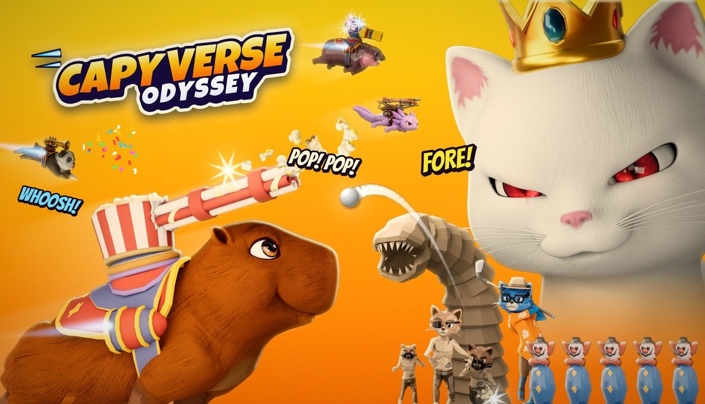
- Feels like
- Fast, arcade, Roboquest-like.
- Strength
- The most motion of the set.
- Weakness
- The tilt makes it read slightly smaller in a box.
Stumble Guys style via GPT 2.5
AI typography, cleaned by hand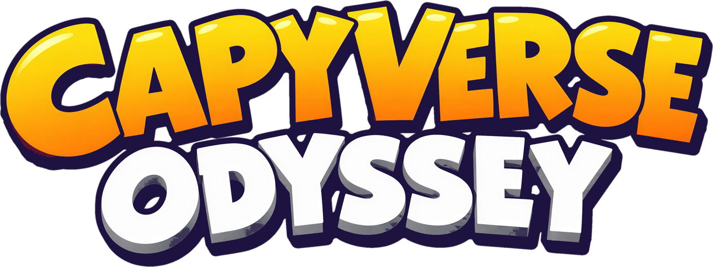
- The Stumble Guys logo went into GPT Image 2.5 as a style reference only, with a prompt to set CAPYVERSE ODYSSEY in the same typography (CAPYVERSE bigger, rows tucked together, no Stumble words). 3 takes on GPT 2.5 and 2 on nano-banana-pro; take 3 was the cleanest.
- Manual clean-up: GPT filled every gap between letters and rows with solid black. A script rebuilt the outline from the letters themselves at an even width, removed the black blobs, recoloured the outline to brand navy and cut it out on transparency (upscaled 3× first).
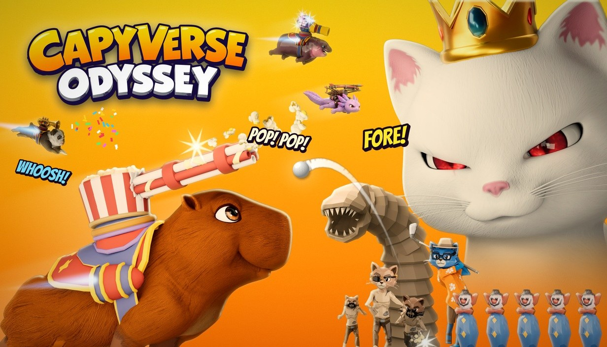
- Feels like
- The closest to Stumble Guys of the whole set.
- Strength
- Boldest and most readable at the smallest sizes.
- Weakness
- It's an AI raster, not vector; the final version should be redrawn as SVG from it (the toolkit here can do that).
Size test
Rows: current logo, A, B, C. Columns: small capsule 462×174 on brand gradient and on Steam's dark UI, then the 231×87 list size.

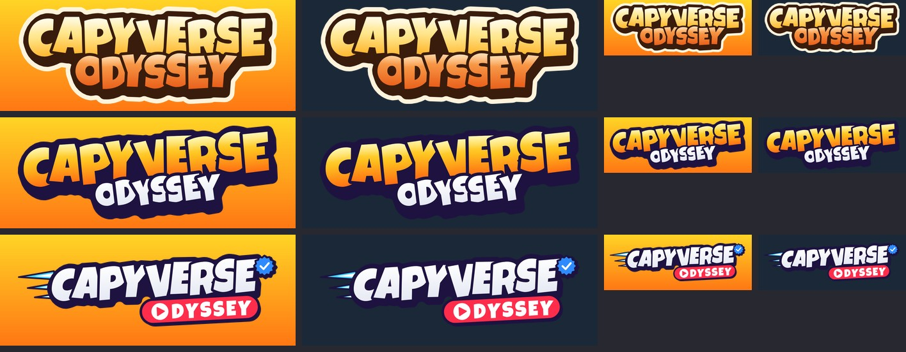
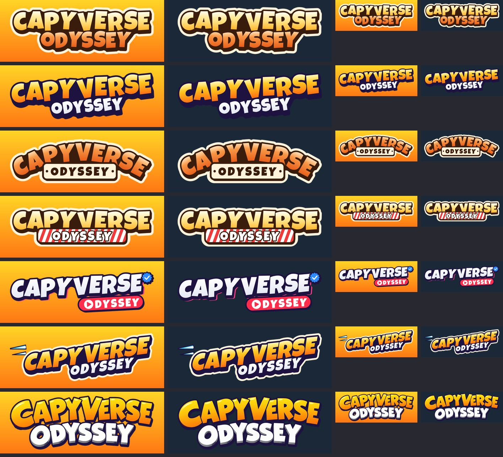
At 231 px, H, E and the GPT version stay fully legible on both backgrounds. D, F and G hold up thanks to their sticker outline. The current logo's planks, gear and vines turn into texture.
Recommendation: H "Viral Stumble"
H is the winner. It keeps the chunky, bouncy Stumble Guys build you liked, now with designed overlaps and jetpack streaks (one object, CAPYVERSE big, ODYSSEY tucked under), and adds what only Capyverse has: the verified badge and the play-button notification pill tell the "capybaras went viral, Ophelia took it personally" story in one look. It stays readable at 231 px on both the brand gradient and Steam's dark UI, and it's a pure vector file.
Runner-up: the GPT Stumble version. It's the boldest at small sizes, but it is an AI raster that leans very close to Stumble Guys. If you prefer it, the next step is redrawing it as clean SVG and adding H's badge and pill.
Look and feel: "loud internet pop"
Flat, chunky, sheared type with an ink outline and one hard hot-pink shadow. Social-UI objects as the graphic language: verified badges, play buttons, hearts, notification pills, view counts. Use them for UI, store banners and trailer titles (e.g. "1.2M CAPYS WATCHING", a verified check on each hero's name card). The 3D game stays as rendered; the graphics on top speak "feed".
#FFD426
Brand orange #FF7814
Ink #160F26
Shadow pink #FF3D7F
Notification red #FF2D4B
Verified blue #2E8BFF
Popcorn cream #FFF3DC
Type: Rubik Black Italic for headlines and the logo family, Nunito Sans for body text. Both are free (OFL) Google Fonts.
Files
Pure vector SVGs (letters converted to paths, no fonts needed). Open in Illustrator, Figma or a browser.
Side by side with the Steam hits
The same 21 logos from the research grid, with the winning Capyverse logo (H) added at the very end, at the same size, on the same background.
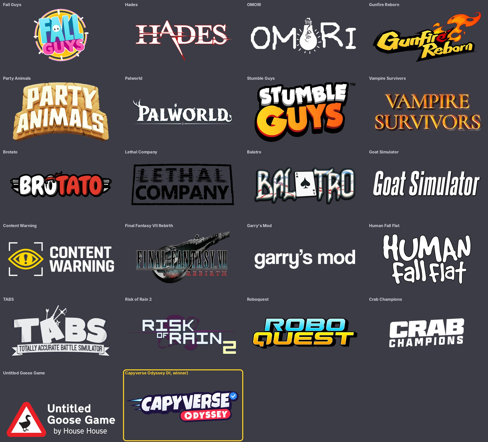